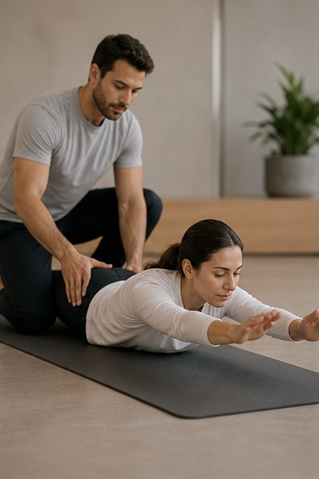
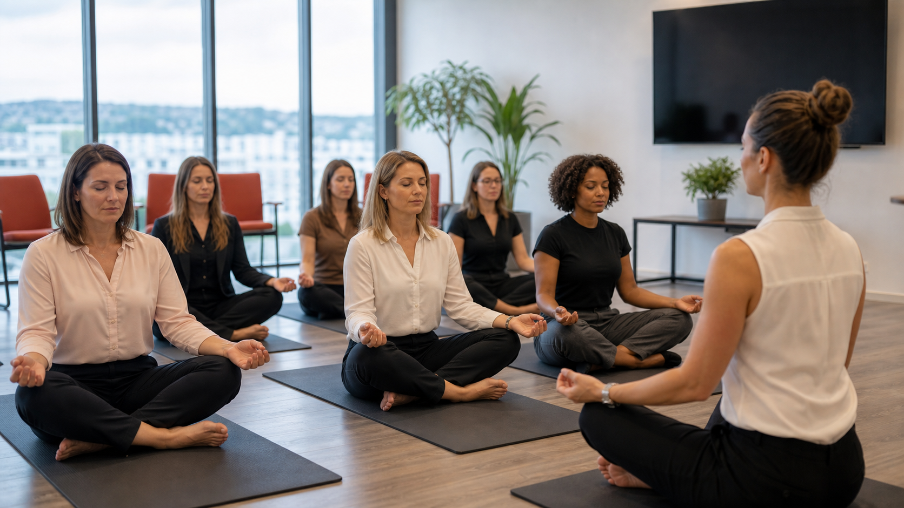
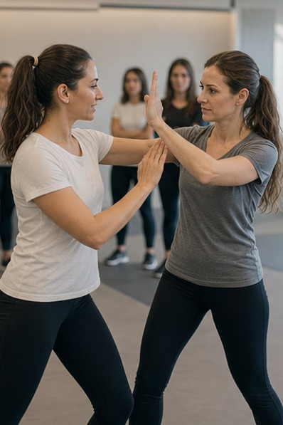

Focus e chiarezza mentale
Yoga, pilates e respirazione supportano presenza, consapevolezza corporea e capacità decisionale.
Welfare aziendale sportivo, salute e performance
BeOx progetta e porta in azienda percorsi sportivi su misura e programmi di welfare aziendale sportivo per il benessere psicofisico dei collaboratori. Yoga, pilates, respirazione, gestione dello stress, autodifesa e sicurezza personale diventano strumenti concreti per sostenere salute, prevenzione, focus, chiarezza mentale e performance.
Perché portare sport e benessere in azienda
Il benessere non è un benefit decorativo: incide su concentrazione, lucidità, qualità delle relazioni e capacità di affrontare pressione e cambiamento. Portare sport, movimento e pratiche di respirazione in azienda significa creare spazi concreti in cui le persone possono ascoltarsi, recuperare energia e migliorare il modo in cui stanno dentro il lavoro.
Yoga, pilates e respirazione supportano presenza, consapevolezza corporea e capacità decisionale.
Le attività contrastano sedentarietà, tensioni muscolari, affaticamento e automatismi poco sani.
Praticare insieme crea uno spazio di condivisione, ascolto e rispetto tra colleghi.
Un corpo più funzionale e una mente più lucida aiutano qualità del lavoro, energia e collaborazione.
Effetti sull'individuo e sul team
Collaboratori più sereni, presenti e consapevoli lavorano meglio. Lo sport in azienda aiuta a creare uno spazio in cui le persone possono prendersi cura di sé, ascoltare il proprio corpo e costruire una relazione più positiva con i colleghi.
Yoga, pilates e autodifesa in rosa contribuiscono a sostenere focus, chiarezza mentale e capacità decisionale.
Un corpo più rilassato e una mente più presente hanno un impatto concreto su performance individuali e di team.
Praticare sport insieme crea uno spazio diverso, più aperto, in cui migliorano ascolto e relazioni tra colleghi.
Le attività favoriscono empatia, rispetto e collaborazione, contribuendo a un clima aziendale più positivo.
Prima leggiamo il bisogno
Prima di proporre un'attività, BeOx aiuta HR e manager a leggere segnali, percezioni e priorità: stress, energia, collaborazione, motivazione, comunicazione e clima.
Il valore per l'azienda
BeOx conosce le dinamiche dei team: pressione, comunicazione, motivazione, ruoli, stress, senso di appartenenza e qualità delle relazioni. Per questo ogni percorso di sport in azienda viene collegato al contesto reale e agli obiettivi dell'organizzazione.
Lo sport diventa uno strumento per lavorare su salute, prevenzione e performance senza trasformare l'azienda in una palestra: format accessibili, modulabili e coerenti con tempi, spazi e livello dei partecipanti.
Scopri il metodo BeOx

Tipologie di attività
Ogni attività può essere proposta come intervento singolo, ciclo di incontri, programma welfare o percorso integrato nel piano di formazione e benessere aziendale.

Lo yoga in azienda non è solo un momento di relax: è uno strumento che migliora il modo di lavorare. Aiuta a sciogliere tensioni muscolari, migliorare postura e respirazione, contrastando gli effetti di sedentarietà e stress.
Il Pilates in azienda è un approccio mirato al controllo e alla stabilità del corpo. Attraverso esercizi precisi e consapevoli rafforza equilibrio, coordinazione e qualità dei movimenti.

Il progetto Autodifesa in Rosa, rivolto alle collaboratrici donne e non solo, fornisce strumenti pratici di autodifesa e prevenzione e permette di lavorare su autostima, comunicazione assertiva e gestione delle emozioni in situazioni di pericolo.
Percorsi brevi e concreti per riconoscere segnali di stress, recuperare lucidità e usare la respirazione come strumento di regolazione. Un'attività accessibile anche a chi non pratica sport.
Programmi disponibili
Sport in Azienda può nascere come esperienza una tantum oppure diventare un appuntamento periodico capace di dare continuità ai benefici della disciplina scelta.
Una sessione singola per avvicinare i collaboratori alla disciplina, spiegarne i benefici e iniziare a lavorare sulle tecniche di base.
Un primo ciclo di appuntamenti periodici in azienda per introdurre una routine e osservare i primi effetti su energia, stress e consapevolezza.
Una frequenza settimanale più stabile per consolidare postura, respiro, movimento, prevenzione e benessere psicofisico.
Un programma continuativo per integrare la disciplina nella cultura aziendale e godere a pieno dei benefici nel tempo.
Metodo BeOx
Il metodo BeOx parte dal contesto aziendale: bisogni, obiettivi HR, livello dei partecipanti, spazi disponibili, tempi, clima e stato di salute del team. Da qui nasce un percorso sostenibile e realmente utile.
Raccogliamo obiettivi, criticità, destinatari e priorità: benessere, stress, postura, relazioni, prevenzione o clima.
Quando utile, partiamo dalla lettura delle percezioni del team per capire dove intervenire con più precisione.
Definiamo attività, durata, calendario, spazi, trainer, livello di intensità e messaggi chiave.
Portiamo in azienda trainer e formatrici capaci di lavorare con gruppi aziendali, non solo con sportivi.
Colleghiamo l'attività a focus, energia, relazioni, stress e comportamenti quotidiani.
Possiamo trasformare l'intervento in un ciclo, un programma welfare o un percorso periodico.
Cosa resta dopo
Sport in azienda significa dare alle persone strumenti semplici per stare meglio nel lavoro: respirare meglio, muoversi meglio, ascoltarsi di più, gestire la pressione e creare relazioni più sane. Il risultato atteso non è solo benessere individuale, ma qualità del lavoro e clima aziendale più positivo.
Porta lo sport nella tua aziendaAlcune delle realtà con cui collaboriamo per formazione aziendale, team building, eventi, percorsi sportivi e sviluppo dei team.




FAQ
Significa portare attività sportive e percorsi di benessere psicofisico direttamente nel contesto aziendale, con format progettati su misura per collaboratori, team, manager e obiettivi HR.
Yoga in azienda, pilates, respirazione e gestione dello stress, autodifesa e sicurezza personale, oltre ad attività sportive collegate a salute, prevenzione, performance e clima aziendale.
Collaboratori più sereni, presenti e consapevoli lavorano meglio. Lo sport in azienda può supportare focus, chiarezza mentale, postura, gestione dello stress, qualità delle relazioni e clima aziendale.
Sì. Le attività vengono adattate a livello, età, ruolo, condizioni organizzative e obiettivi dell'azienda. Il focus non è la prestazione atletica, ma il benessere psicofisico e la consapevolezza.
Può essere un singolo intervento, una mezza giornata, una giornata, un ciclo di incontri o un programma welfare periodico. La durata viene definita sul bisogno aziendale.
La sessione una tantum serve ad avvicinare i collaboratori alla disciplina, spiegarne i benefici e introdurre tecniche di base. Il percorso prevede appuntamenti periodici, anche settimanali, per dare continuità e godere a pieno dei benefici nel tempo.
BeOx può progettare percorsi di 3, 6 o 9 mesi, con frequenza e contenuti definiti in base a obiettivi, partecipanti, spazi, calendario aziendale e disciplina scelta.
Sì. BeOx parte da obiettivi, destinatari, spazi, tempi, stato di salute del team e priorità HR per costruire un percorso coerente con il contesto aziendale.
Sì. L'AI Team Check aiuta a leggere percezioni e segnali del team e può essere il primo passo per capire quali attività siano più utili.
Sì. BeOx progetta e porta percorsi sportivi e di benessere psicofisico in aziende di tutta Italia, tra cui Milano, Roma, Torino, Bologna, Padova, Verona, Vicenza, Venezia, Treviso, Firenze, Genova, Napoli e Bari.
Richiedi una proposta
Raccontaci obiettivo, destinatari, numero di partecipanti e contesto. Ti aiuteremo a capire quale attività può sostenere meglio benessere, prevenzione, clima e performance.